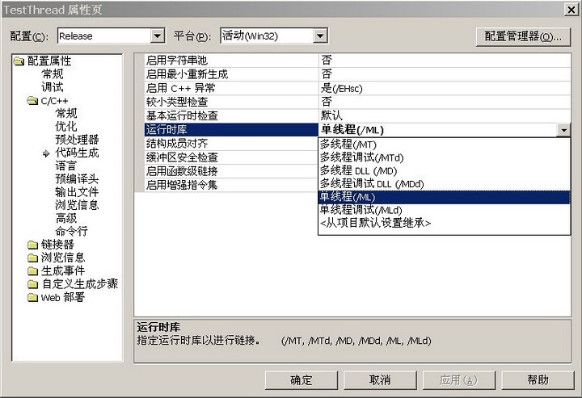

最近一个多月写的帖子比较杂，导致本系列又好久没更新了。结果又有网友在评论中催我了，搞得我有点囧。今天赶紧把多线程篇补上。上次聊操作系统的时候，由于和 OS 有关的话题比较琐碎，杂七杂八说了一大堆。当时一看篇幅有点长，就把多进程和多线程的部分给留到后面了。
先来说一个很基本的问题：关于 C 运行库（后面简称 CRT：C Run-Time）的设置。本来不想聊这么低级的问题，但周围有好几个人都在这个地方吃过亏，所以还是讲一下。
大部分 C++ 编译器都会自带有 CRT（可能还不止一个）。某些编译器自带的 CRT 可能会根据线程的支持分为“单线程 CRT”和“多线程 CRT”两类。当你要进行多线程开发的时候，别忘了确保相关的 C++ 工程项目使用的是多线程的 CRT。否则会死得很难看。
尤其当你使用 Visual C++ 创建工程项目，更加要小心。如果新建的工程项目是【不含】MFC 的（包括 Console 工程和 Win32 工程），那工程的默认设置会是使用“单线程 CRT”，如下图所示：

“优化选项”是另一个很关键的编译器相关话题。有些编译器提供号称很牛X的优化选项，但是某些优化选项可能会有潜在的风险。编译器可能自作主张打乱执行指令的顺序，从而导致出乎意料的线程竞态问题（Race Condition，详细解释看“这里”）。刘未鹏同学在“C++多线程内存模型”里举了几个典型的例子，大伙儿可以去瞧一瞧。
建议只使用编译器常规的速度优化选项即可。其它那些花哨的优化选项，增加的效果未必明显，但是潜在的风险不小。实在不值得冒险。
以 GCC 为例：建议用 -O2 选项即可（其实 -O2 是一堆选项的集合），没必要冒险用 -O3（除非你有很充足的理由）。除了 -O2 和 -O3 之外，GCC 还有一大坨（估计有上百个）其它的优化选项。如果你企图用当中的某个选项，一定要先把它的特性、可能的副作用都摸清楚，否则将来死都不知道怎么死的。
由于当前的 C++ 03 标准几乎没有涉及线程相关的内容（即使将来 C++ 0x 包含了线程的标准库，编译器厂商的支持在短期内也未必全面），所以在未来很长的一段时间，跨平台的多线程支持还是要依赖第三方库。所以线程库的选择是大大滴重要。下面大致介绍一下几个知名的跨平台线程库。
ACE
先说一下 ACE 这个历史悠久的库。如果你之前从未接触过它，先看“这里”扫盲。从 ACE 的全称（Adaptive Communication Environment）来看，它应该是以“通讯”为主业。不过 ACE 对“多线程”这个副业的支持还是非常全面的，比如互斥锁（ACE_Mutex）、条件变量（ACE_Condition）、信号量（ACE_Semaphore）、栅栏（ACE_Barrier）、原子操作（ACE_Atomic_Op）等等。对某些类型比如 ACE_Mutex 还细分为线程读写锁（ACE_RW_Thread_Mutex）、线程递归锁（ACE_Recursive_Thread_Mutex）等等。
除了支持很全面，ACE 还有另一个很明显的优点，就是对各种操作系统平台及其自带的编译器支持很好。包括一些老式的编译器（比如VC6），它也能够支持（此处所说的支持，不光是能编译通过，而且要能稳定运行）。这个优点对于跨平台开发那是相当相当滴明显。
那缺点捏？由于 ACE 开工的年头很早（大概是上世纪九十年代中期），那会儿很多 C++ 的老特性都还没出来（更别提新特性了），所以感觉 ACE 整个的风格比较老气，远不如 boost 那么时髦前卫。
boost::thread
boost::thread 正好和 ACE 形成鲜明对照。这玩意貌似从 boost 1.32 版本开始引入，年头比 ACE 短。不过得益于 boost 里一帮大牛的支持，发展还是蛮快的。截止写本文时的 boost 1.38 版本，已经能够支持许多特性了（不过似乎没 ACE 多）。鉴于很多 C++ 标准委员会的成员云集在 boost 社区中，随着时间的推移，boost::thread 终将成为 C++ 线程的明日之星，前途无量啊！
boost::thread 的缺点就是支持的编译器不够多，尤其是一些【老式】编译器（很多 boost 的子库都有此问题，多半因为用了一些高级的模板语法）。这对于跨平台而言一个比较明显的问题。
wxWidgets 和 QT
wxWidgets 和 QT 都是 GUI 界面库，但是它们也都内置和对线程的支持。wxWidgets 线程的简介可以看“这里”，关于 QT 线程的简介可以看“这里”。这两个库对线程的支持差不多，都提供了诸如 mutex、condition、semaphore 等常用的机制。不过特性没有 ACE 丰富。
对于开发 GUI 软件并已经用上了 wxWidgets 或者 QT，那你可以直接用它们内置的线程库（前提是你只用到基本的线程功能）。由于它们内置的线程库，特性稍嫌单薄。万一你需要某高级的线程功能，那得考虑替换成 boost::thread 或 ACE。
至于 boost::thread 和 ACE 的取舍，主要得看软件的需求了。如果你要支持的平台挺多挺杂，那建议选用 ACE，以免碰上编译器不支持的问题。如果你只需要支持少数几个主流的平台（比如 Windows、Linux、Mac），那建议用 boost::thread。毕竟主流操作系统上的编译器，对 boost 的支持还是蛮好的。
其实多线程开发，需要注意的地方挺多的，我只能大致列几个印象比较深的注意事项。
说到多线程编程可能碰到的陷阱，那就不得不提到 volatile 关键字。如果你对它还不甚了解，先看“这里”扫盲一下。
由于 C++ 98 和 C++ 03 标准都【没有】定义多线程的内存模型，而且这俩标准中也就只有 volatile 和线程沾点儿边。结果导致 C++ 社区中有相当多的口水都集中在 volatile 身上（其中包括不少 C++ 大牛的口水）。有鉴于此，我这里就不再多啰嗦了。推荐几个大牛的文章：
Andrei Alexandrescu的文章（“这里”）
Hans Boehm 的文章（“这里”和“这里”）
大伙儿自个儿去拜读一下。
有些同学光知道多个线程的竞争写需要加锁，却不知道多个读单个写也需要保护。比如有某个整数 int nCount = 0x01020304；在并发状态下，一个写线程去修改它的值 nCount = 0x05060708；另一个读线程去获取该值。那么读线程有没有可能读取到一个“坏”的（比方说 0x05060304）数据捏？
数据是否坏掉，取决于对 nCount 的读和写是否属于原子操作。而这就依赖于很多硬件相关的因素了（包括 CPU 的类型、CPU 的字长、内存对齐的字节数等）。在某些情况下，确实可能出现数据坏掉。
由于我们讨论的是跨平台的开发，天晓得将来你的代码会在啥样的硬件环境下执行。所以在处理类似问题的时候，还是要用第三方库提供的原子操作类/函数（比如 ACE 的 Atomic_Op）来确保安全。
在之前的系列帖子《C++ 对象是怎么死的？》里面，已经分别介绍了 Win32 平台和 Posix 平台下线程的【非】自然死亡问题。由于上述几个跨平台的线程库底层还是要调用操作系统自带的线程 API，所以大伙儿还是要尽最大努力确保【所有】线程都能够【自然死亡】。
今天的话题就聊到这里，下一次聊多进程的话题。
回到本系列的目录
★编译器
◇关于 C 运行库选项
先来说一个很基本的问题：关于 C 运行库（后面简称 CRT：C Run-Time）的设置。本来不想聊这么低级的问题，但周围有好几个人都在这个地方吃过亏，所以还是讲一下。
大部分 C++ 编译器都会自带有 CRT（可能还不止一个）。某些编译器自带的 CRT 可能会根据线程的支持分为“单线程 CRT”和“多线程 CRT”两类。当你要进行多线程开发的时候，别忘了确保相关的 C++ 工程项目使用的是多线程的 CRT。否则会死得很难看。
尤其当你使用 Visual C++ 创建工程项目，更加要小心。如果新建的工程项目是【不含】MFC 的（包括 Console 工程和 Win32 工程），那工程的默认设置会是使用“单线程 CRT”，如下图所示：
◇关于优化选项
“优化选项”是另一个很关键的编译器相关话题。有些编译器提供号称很牛X的优化选项，但是某些优化选项可能会有潜在的风险。编译器可能自作主张打乱执行指令的顺序，从而导致出乎意料的线程竞态问题（Race Condition，详细解释看“这里”）。刘未鹏同学在“C++多线程内存模型”里举了几个典型的例子，大伙儿可以去瞧一瞧。
建议只使用编译器常规的速度优化选项即可。其它那些花哨的优化选项，增加的效果未必明显，但是潜在的风险不小。实在不值得冒险。
以 GCC 为例：建议用 -O2 选项即可（其实 -O2 是一堆选项的集合），没必要冒险用 -O3（除非你有很充足的理由）。除了 -O2 和 -O3 之外，GCC 还有一大坨（估计有上百个）其它的优化选项。如果你企图用当中的某个选项，一定要先把它的特性、可能的副作用都摸清楚，否则将来死都不知道怎么死的。
◇线程库的选择
由于当前的 C++ 03 标准几乎没有涉及线程相关的内容（即使将来 C++ 0x 包含了线程的标准库，编译器厂商的支持在短期内也未必全面），所以在未来很长的一段时间，跨平台的多线程支持还是要依赖第三方库。所以线程库的选择是大大滴重要。下面大致介绍一下几个知名的跨平台线程库。
ACE
先说一下 ACE 这个历史悠久的库。如果你之前从未接触过它，先看“这里”扫盲。从 ACE 的全称（Adaptive Communication Environment）来看，它应该是以“通讯”为主业。不过 ACE 对“多线程”这个副业的支持还是非常全面的，比如互斥锁（ACE_Mutex）、条件变量（ACE_Condition）、信号量（ACE_Semaphore）、栅栏（ACE_Barrier）、原子操作（ACE_Atomic_Op）等等。对某些类型比如 ACE_Mutex 还细分为线程读写锁（ACE_RW_Thread_Mutex）、线程递归锁（ACE_Recursive_Thread_Mutex）等等。
除了支持很全面，ACE 还有另一个很明显的优点，就是对各种操作系统平台及其自带的编译器支持很好。包括一些老式的编译器（比如VC6），它也能够支持（此处所说的支持，不光是能编译通过，而且要能稳定运行）。这个优点对于跨平台开发那是相当相当滴明显。
那缺点捏？由于 ACE 开工的年头很早（大概是上世纪九十年代中期），那会儿很多 C++ 的老特性都还没出来（更别提新特性了），所以感觉 ACE 整个的风格比较老气，远不如 boost 那么时髦前卫。
boost::thread
boost::thread 正好和 ACE 形成鲜明对照。这玩意貌似从 boost 1.32 版本开始引入，年头比 ACE 短。不过得益于 boost 里一帮大牛的支持，发展还是蛮快的。截止写本文时的 boost 1.38 版本，已经能够支持许多特性了（不过似乎没 ACE 多）。鉴于很多 C++ 标准委员会的成员云集在 boost 社区中，随着时间的推移，boost::thread 终将成为 C++ 线程的明日之星，前途无量啊！
boost::thread 的缺点就是支持的编译器不够多，尤其是一些【老式】编译器（很多 boost 的子库都有此问题，多半因为用了一些高级的模板语法）。这对于跨平台而言一个比较明显的问题。
wxWidgets 和 QT
wxWidgets 和 QT 都是 GUI 界面库，但是它们也都内置和对线程的支持。wxWidgets 线程的简介可以看“这里”，关于 QT 线程的简介可以看“这里”。这两个库对线程的支持差不多，都提供了诸如 mutex、condition、semaphore 等常用的机制。不过特性没有 ACE 丰富。
★如何权衡不同的库
对于开发 GUI 软件并已经用上了 wxWidgets 或者 QT，那你可以直接用它们内置的线程库（前提是你只用到基本的线程功能）。由于它们内置的线程库，特性稍嫌单薄。万一你需要某高级的线程功能，那得考虑替换成 boost::thread 或 ACE。
至于 boost::thread 和 ACE 的取舍，主要得看软件的需求了。如果你要支持的平台挺多挺杂，那建议选用 ACE，以免碰上编译器不支持的问题。如果你只需要支持少数几个主流的平台（比如 Windows、Linux、Mac），那建议用 boost::thread。毕竟主流操作系统上的编译器，对 boost 的支持还是蛮好的。
★编程上的注意事项
其实多线程开发，需要注意的地方挺多的，我只能大致列几个印象比较深的注意事项。
◇关于 volatile
说到多线程编程可能碰到的陷阱，那就不得不提到 volatile 关键字。如果你对它还不甚了解，先看“这里”扫盲一下。
由于 C++ 98 和 C++ 03 标准都【没有】定义多线程的内存模型，而且这俩标准中也就只有 volatile 和线程沾点儿边。结果导致 C++ 社区中有相当多的口水都集中在 volatile 身上（其中包括不少 C++ 大牛的口水）。有鉴于此，我这里就不再多啰嗦了。推荐几个大牛的文章：
Andrei Alexandrescu的文章（“这里”）
Hans Boehm 的文章（“这里”和“这里”）
大伙儿自个儿去拜读一下。
◇关于原子操作
有些同学光知道多个线程的竞争写需要加锁，却不知道多个读单个写也需要保护。比如有某个整数 int nCount = 0x01020304；在并发状态下，一个写线程去修改它的值 nCount = 0x05060708；另一个读线程去获取该值。那么读线程有没有可能读取到一个“坏”的（比方说 0x05060304）数据捏？
数据是否坏掉，取决于对 nCount 的读和写是否属于原子操作。而这就依赖于很多硬件相关的因素了（包括 CPU 的类型、CPU 的字长、内存对齐的字节数等）。在某些情况下，确实可能出现数据坏掉。
由于我们讨论的是跨平台的开发，天晓得将来你的代码会在啥样的硬件环境下执行。所以在处理类似问题的时候，还是要用第三方库提供的原子操作类/函数（比如 ACE 的 Atomic_Op）来确保安全。
◇关于对象的析构
在之前的系列帖子《C++ 对象是怎么死的？》里面，已经分别介绍了 Win32 平台和 Posix 平台下线程的【非】自然死亡问题。由于上述几个跨平台的线程库底层还是要调用操作系统自带的线程 API，所以大伙儿还是要尽最大努力确保【所有】线程都能够【自然死亡】。
今天的话题就聊到这里，下一次聊多进程的话题。
回到本系列的目录
版权声明
本博客所有的原创文章，作者皆保留版权。转载必须包含本声明，保持本文完整，并以超链接形式注明作者编程随想和本文原始地址：
https://program-think.blogspot.com/2009/04/cxx-cross-platform-develop-6-thread.html
本博客所有的原创文章，作者皆保留版权。转载必须包含本声明，保持本文完整，并以超链接形式注明作者编程随想和本文原始地址：
https://program-think.blogspot.com/2009/04/cxx-cross-platform-develop-6-thread.html